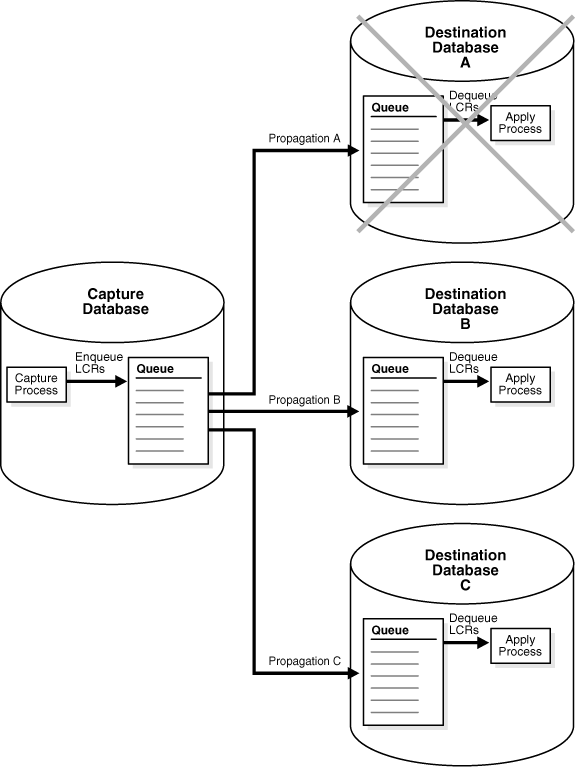
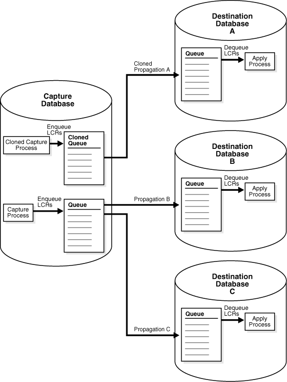

12 Managing Oracle Streams Replication
This chapter contains instructions for managing an Oracle Streams replication environment.
This chapter contains these topics:
12.1 About Managing Oracle Streams
After an Oracle Streams replication environment is in place, you can manage the Oracle Streams components at each database. Management includes administering the components. For example, you can set capture process parameters to modify the behavior of a capture process. Management also includes monitoring the Oracle Streams components and troubleshooting them if there are problems.
The following documentation provides instructions for managing Oracle Streams:
-
Oracle Streams Concepts and Administration provides detailed instructions about managing Oracle Streams components.
-
Oracle Streams Replication Administrator's Guide (this document) provides instructions that are specific to an Oracle Streams replication environment.
-
The online help for the Oracle Streams interface in Oracle Enterprise Manager Cloud Control provides information about managing Oracle Streams with Oracle Enterprise Manager Cloud Control.
12.2 Tracking LCRs Through a Stream
A logical change record (LCR) typically flows through a stream in the following way:
-
A database change is captured, formatted into an LCR, and enqueued. A capture process or a synchronous capture can capture database changes implicitly. An application or user can construct and enqueue LCRs to capture database changes explicitly.
-
One or more propagations send the LCR to other databases in the Oracle Streams environment.
-
One or more apply processes dequeue the LCR and process it.
You can track an LCR through a stream using one of the following methods:
-
When LCRs are captured by a capture process, you can set the
message_tracking_frequencycapture process parameter to1or another relatively low value. -
When LCRs are captured by a capture process or a synchronous capture, or when LCRs are constructed by an application, you can run the
SET_MESSAGE_TRACKINGprocedure in theDBMS_STREAMS_ADMpackage.
LCR tracking is useful if LCRs are not being applied as expected by one or more apply processes. When this happens, you can use LCR tracking to determine where the LCRs are stopping in the stream and address the problem at that location.
After using one of these methods to track LCRs, use the V$STREAMS_MESSAGE_TRACKING view to monitor the progress of LCRs through a stream. By tracking an LCR through the stream, you can determine where the LCR is blocked. After LCR tracking is started, each LCR includes a tracking label.
When LCR tracking is started using the message_tracking_frequency capture process parameter, the tracking label is capture_process_name:AUTOTRACK, where capture_process_name is the name of the capture process. Only the first 20 bytes of the capture process name are used; the rest is truncated if it exceeds 20 bytes.
The SET_MESSAGE_TRACKING procedure enables you to specify a tracking label that becomes part of each LCR generated by the current session. Using this tracking label, you can query the V$STREAMS_MESSAGE_TRACKING view to track the LCRs through the stream and see how they were processed by each Oracle Streams client. When you use the SET_MESSAGE_TRACKING procedure, the following LCRs are tracked:
-
When a capture process or a synchronous capture captures an LCR, and a tracking label is set for the session that made the captured database change, the tracking label is included in the LCR automatically.
-
When a user or application constructs an LCR and a tracking label is set for the session that constructs the LCR, the tracking label is included in the LCR automatically.
To track LCRs through a stream, complete the following steps:
-
Start LCR tracking.
You can start LCR tracking in one of the following ways:
-
Connect to database running the capture process and set the
message_tracking_frequencycapture process parameter to1or another relatively low value. After setting the capture process parameter, proceed to Step 2.See Oracle Streams Concepts and Administration for information about setting capture process parameters.
See Oracle Database Administrator's Guide for instructions about connecting to a database in SQL*Plus.
-
Run the
SET_MESSAGE_TRACKINGprocedure in theDBMS_STREAMS_ADMpackage by completing the following steps:
-
In SQL*Plus, start a session. To use a tracking label for database changes captured by a capture process or synchronous capture, connect to the source database for the capture process or synchronous capture.
-
Begin message tracking:
BEGIN DBMS_STREAMS_ADM.SET_MESSAGE_TRACKING( tracking_label => 'TRACK_LCRS'); END; /You can use any label you choose to track LCRs. This example uses the
TRACK_LCRSlabel.Information about the LCRs is tracked in memory, and the
V$STREAMS_MESSAGE_TRACKINGdynamic performance view is populated with information about the LCRs. -
Optionally, to ensure that message tracking is set in the session, query the tracking label:
SELECT DBMS_STREAMS_ADM.GET_MESSAGE_TRACKING() TRACKING_LABEL FROM DUAL;
This query should return the tracking label you specified in Step 1.b:
TRACKING_LABEL -------------------------------------------------------------------------- TRACK_LCRS
-
-
Make changes to the source database that will be captured by the capture process or synchronous capture that starts the stream, or construct and enqueue the LCRs you want to track. Typically, these LCRs are for testing purposes only. For example, you can insert several dummy rows into a table and then modify these rows. When the testing is complete, you can delete the rows.
-
Monitor the entire Oracle Streams environment to track the LCRs. To do so, query the
V$STREAMS_MESSAGE_TRACKINGview at each database that processes the LCRs.For example, run the following query at each database:
COLUMN COMPONENT_NAME HEADING 'Component|Name' FORMAT A10 COLUMN COMPONENT_TYPE HEADING 'Component|Type' FORMAT A12 COLUMN ACTION HEADING 'Action' FORMAT A11 COLUMN SOURCE_DATABASE_NAME HEADING 'Source|Database' FORMAT A10 COLUMN OBJECT_OWNER HEADING 'Object|Owner' FORMAT A6 COLUMN OBJECT_NAME HEADING 'Object|Name' FORMAT A10 COLUMN COMMAND_TYPE HEADING 'Command|Type' FORMAT A7 SELECT COMPONENT_NAME, COMPONENT_TYPE, ACTION, SOURCE_DATABASE_NAME, OBJECT_OWNER, OBJECT_NAME, COMMAND_TYPE FROM V$STREAMS_MESSAGE_TRACKING;Ensure that you specify the correct tracking label in the
WHEREclause.These queries will show how the LCRs were processed at each database. If the LCRs are not being applied at destination databases, then these queries will show where in the stream the LCRs are stopping.
For example, the output at a source database with a synchronous capture is similar to the following:
Component Component Source Object Object Command Name Type Action Database Owner Name Type ---------- ------------ ----------- ---------- ------ ---------- ------- CAPTURE SYNCHRONOUS Create HUB.EXAMPL HR EMPLOYEES UPDATE CAPTURE E.COM CAPTURE SYNCHRONOUS Rule evalua HUB.EXAMPL HR EMPLOYEES UPDATE CAPTURE tion E.COM CAPTURE SYNCHRONOUS Enqueue HUB.EXAMPL HR EMPLOYEES UPDATE CAPTURE E.COMThe output at a destination database with an apply process is similar to the following:
Component Component Source Object Object Command Name Type Action Database Owner Name Type ---------- ------------ ----------- ---------- ------ ---------- ------- APPLY_SYNC APPLY READER Dequeue HUB.EXAMPL HR EMPLOYEES UPDATE _CAP E.COM APPLY_SYNC APPLY READER Dequeue HUB.EXAMPL HR EMPLOYEES UPDATE _CAP E.COM APPLY_SYNC APPLY READER Dequeue HUB.EXAMPL HR EMPLOYEES UPDATE _CAP E.COM
You can query additional columns in the
V$STREAMS_MESSAGE_TRACKINGview to display more information. For example, theACTION_DETAILScolumn provides detailed information about each action. -
Stop message tracking. Complete one of the following actions based your choice in Step 1:
-
If you set the
message_tracking_frequencycapture process parameter in Step 1, then set this parameter back to its default value. The default is to track every two-millionth message.To set this capture process parameter back to its default value, connect to database running the capture process and set the
message_tracking_frequencycapture process parameter toNULL.See Oracle Streams Concepts and Administration for information about setting capture process parameters.
-
If you started message tracking in the current session, then stop message tracking in the session.
To stop message tracking in the current session, set the
tracking_labelparameter toNULLin theSET_MESSAGE_TRACKINGprocedure:BEGIN DBMS_STREAMS_ADM.SET_MESSAGE_TRACKING( tracking_label => NULL, actions => DBMS_STREAMS_ADM.ACTION_MEMORY); END; /
-
See Also:
Oracle Database PL/SQL Packages and Types Reference for information about the message_tracking_frequency capture process parameter
12.3 Splitting and Merging an Oracle Streams Destination
The following sections describe how to split and merge streams and provide examples that do so:
12.3.1 About Splitting and Merging Oracle Streams
Splitting and merging an Oracle Streams destination is useful under the following conditions:
-
A single capture process captures changes that are sent to two or more apply processes.
-
An apply process stops accepting changes captured by the capture process. The apply process might stop accepting changes if, for example, the apply process is disabled, the database that contains the apply process goes down, there is a network problem, the computer system running the database that contains the apply process goes down, or for some other reason.
When these conditions are met, it is best to split the problem destination off from the other destinations. The reason to split the destination off depends on whether the configuration uses the combined capture and apply optimization:
-
If the apply process at the problem destination is part of a combined capture and apply optimization and the destination is not split off, then performance will suffer when the destination becomes available again. In this case, the capture process must capture the changes that must now be applied at the destination previously split off. The other destinations will not receive more recent changes until the problem destination has caught up. However, if the problem destination is split off, then it can catch up to the other destinations independently, without affecting the other destinations.
-
If the apply process at the destination is not part of a combined capture and apply optimization, then captured changes that cannot be sent to the problem destination queue remain in the source queue, causing the source queue size to increase. Eventually, the source queue will spill captured logical change records (LCRs) to hard disk, and the performance of the Oracle Streams replication environment will suffer.
Split and merge operations are possible in the following types of Oracle Streams replication environments:
-
Changes captured by a single capture process are sent to multiple remote destinations using propagations and are applied by apply processes at the remote destinations.
-
Changes captured by a single capture process are applied locally by multiple apply processes on the same database that is running the capture process.
-
Changes captured by a single capture process are sent to one or more remote destinations using propagations and are applied locally by one or more apply processes on the same database that is running the capture process.
For environment with local capture and apply, split and merge operations are possible when the capture process and apply processes share the same queue, and when a propagation sends changes from the capture process's queue to an apply process's queue within the one database.
Figure 12-1 shows an Oracle Streams replication environment that uses propagations to send changes to multiple destinations. In this example, destination database A is down.
Figure 12-1 Problem Destination in an Oracle Streams Replication Environment
Description of "Figure 12-1 Problem Destination in an Oracle Streams Replication Environment"
You can use the following data dictionary views to determine when there is a problem with a stream:
-
Query the
V$BUFFERED_QUEUESview to identify how many messages are in a buffered queue and how many of these messages have spilled to hard disk. -
When propagations are used, query the
DBA_PROPAGATIONandV$PROPAGATION_SENDERviews to show the propagations in a database and the status of each propagation
To avoid degraded performance in this situation, split the stream that flows to the problem database off from the other streams flowing from the capture process. When the problem is corrected, merge the stream back into the other streams flowing from the capture process.
You can configure capture process parameters to split and merge a problem stream automatically, or you can split and merge a problem stream manually. Either way, the SPLIT_STREAMS, MERGE_STREAMS_JOB, and MERGE_STREAMS procedures in the DBMS_STREAMS_ADM package are used. The SPLIT_STREAMS procedure splits off the stream for the problem destination from all of the other streams flowing from a capture process to other destinations. The SPLIT_STREAMS procedure always clones the capture process and the queue. The SPLIT_STREAMS procedure also clones the propagation in an environment that sends changes to remote destination databases. The cloned versions of these components are used by the stream that is split off. While the problem stream is split off, the streams to other destinations proceed as usual.
Figure 12-2 shows the cloned stream created by the SPLIT_STREAMS procedure.
When the problem destination becomes available again, the cloned stream begins to send captured changes to the destination database again.
Figure 12-3 shows a destination database A that is up and running and a cloned capture process that is enabled at the capture database. The cloned stream begins to flow and starts to catch up to the original streams.
Figure 12-3 Cloned Stream Begins Flowing and Starts to Catch Up to One Original Stream
Description of "Figure 12-3 Cloned Stream Begins Flowing and Starts to Catch Up to One Original Stream"
When the cloned stream catches up to one of the original streams, one of the following procedures merges the streams:
-
The
MERGE_STREAMSprocedure merges the stream that was split off back into the other streams flowing from the original capture process. -
The
MERGE_STREAMS_JOBprocedure determines whether the streams are within the user-specified merge threshold. If they are, then theMERGE_STREAMS_JOBprocedure runs theMERGE_STREAMSprocedure. If the streams are not within the merge threshold, then theMERGE_STREAMS_JOBprocedure does nothing.
Typically, it is best to run the MERGE_STREAMS_JOB procedure instead of running the MERGE_STREAMS procedure directly, because the MERGE_STREAMS_JOB procedure automatically determines whether the streams are ready to merge before merging them.
Figure 12-4 shows the results of running the MERGE_STREAMS procedure. The Oracle Streams replication environment has its original components, and all of the streams are flowing normally.
See Also:
Oracle Streams Concepts and Administration for information about combined capture and apply
12.3.2 Split and Merge Options
The following split and merge options are available:
12.3.2.1 Automatic Split and Merge
You can set two capture process parameters, split_threshold and merge_theshold, so that Oracle Streams performs split and merge operations automatically. When these parameters are set to specify automatic split and merge, an Oracle Scheduler job monitors the streams flowing from the capture process. When an Oracle Scheduler job identifies a problem with a stream, the job splits the problem stream off from the other streams flowing from the capture process. When a split operation is complete, a new Oracle Scheduler merge job monitors the split stream. When the problem is corrected, this job merges the stream back with the other streams.
When the split_threshold capture process parameter is set to INFINITE, automatic splitting is disabled. When the split_threshold parameter is not set to INFINITE, automatic splitting is enabled. Automatic splitting only occurs when communication with an apply process has been lost for the number of seconds specified in the split_threshold parameter. For example, communication with an apply process is lost when an apply process becomes disabled or a destination database goes down. Automatic splitting does not occur when one stream is processing changes slower than other streams.
When a stream is split, a cloned capture process is created. The cloned capture process might be enabled or disabled after the split depending on whether the configuration uses the combined capture and apply optimization:
-
If the apply process is part of a combined capture and apply optimization, then the cloned capture process is enabled. The cloned capture process does not capture any changes until the apply process is enabled and communication is established with the apply process.
-
If the apply process is not part of a combined capture and apply optimization, then the cloned capture process is disabled so that LCRs do not build up in a queue. When the apply process is enabled and the cloned stream can flow, you can start the cloned capture process manually.
The split stream is merged back with the original streams automatically when the difference, in seconds, between CAPTURE_MESSAGE_CREATE_TIME in the GV$STREAMS_CAPTURE view of the cloned capture process and the original capture process is less than or equal to the value specified for the merge_threshold capture process parameter. The CAPTURE_MESSAGE_CREATE_TIME records the time when a captured change was recorded in the redo log. If the difference is greater than the value specified by this capture process parameter, then automatic merge does not begin, and the value is recorded in the LAG column of the DBA_STREAMS_SPLIT_MERGE view.
When the capture process and the apply process for a stream run in different database instances, automatic split and merge is always possible for the stream. When a capture process and apply process for a stream run on the same database instance, automatic split and merge is possible only when all of the following conditions are met:
-
The capture process and apply process use the same queue.
-
The apply process has no errors in its error queue.
-
The apply process is not an XStream outbound server.
-
The apply process is stopped.
-
No messages have spilled from the buffered queue to the hard disk.
See Also:
-
"Splitting and Merging an Oracle Streams Destination Automatically" for an example
-
Oracle Database PL/SQL Packages and Types Reference for more information about the capture process parameters
-
Oracle Streams Concepts and Administration for information about monitoring automatic split and merge operations
12.3.2.2 Manual Split and Automatic Merge
When you split streams manually with the SPLIT_STREAMS procedure, the auto_merge_threshold procedure parameter gives you the option of automatically merging the stream back to the original capture process when the problem at the destination is corrected. After the apply process for the problem stream is accepting changes, you can start the cloned capture process and wait for the cloned capture process to catch up to the original capture process. When the cloned capture process nearly catches up, the auto_merge_threshold parameter setting determines whether the split stream is merged automatically or manually:
-
When
auto_merge_thresholdis set to a positive number, theSPLIT_STREAMSprocedure creates an Oracle Scheduler job with a schedule. The job runs theMERGE_STREAMS_JOBprocedure and specifies a merge threshold equal to the value specified in theauto_merge_thresholdparameter. You can modify the schedule for a job after it is created.In this case, the split stream is merged back with the original streams automatically when the difference, in seconds, between
CAPTURE_MESSAGE_CREATE_TIMEin theGV$STREAMS_CAPTUREview of the cloned capture process and the original capture process is less than or equal to the value specified for theauto_merge_thresholdparameter. TheCAPTURE_MESSAGE_CREATE_TIMErecords the time when a captured change was recorded in the redo log. -
When
auto_merge_thresholdis set toNULLor0(zero), the split stream is not merged back with the original streams automatically. To merge the split stream with the original streams, run theMERGE_STREAMS_JOBorMERGE_STREAMSprocedure manually.
See Also:
"Splitting an Oracle Streams Destination Manually and Merging It Automatically" for an example
12.3.2.3 Manual Split and Merge With Generated Scripts
The SPLIT_STREAMS and MERGE_STREAMS procedures can perform actions directly or generate a script that performs the actions when the script is run. Using a procedure to perform actions directly is simpler than running a script, and the split or merge operation is performed immediately. However, you might choose to generate a script for the following reasons:
-
You want to review the actions performed by the procedure before splitting or merging streams.
-
You want to modify the script to customize its actions.
For example, you might choose to modify the script if you want to change the rules in the rule set for the cloned capture process. In some Oracle Streams replication environments, only a subset of the changes made to the source database are sent to each destination database, and each destination database might receive a different subset of the changes. In such an environment, you can modify the rule set for the cloned capture process so that it only captures changes that are propagated by the cloned propagation.
The perform_actions parameter in each procedure controls whether the procedure performs actions directly:
-
To split or merge streams directly when you run one of these procedures, set the
perform_actionsparameter toTRUE. The default value for this parameter isTRUE. -
To generate a script when you run one of these procedures, set the
perform_actionsparameter toFALSE, and use thescript_nameandscript_directory_objectparameters to specify the name and location of the script.
See Also:
"Splitting and Merging an Oracle Streams Destination Manually With Scripts" for an example
12.3.3 Examples That Split and Merge Oracle Streams
The following sections provide instructions for splitting and merging streams:
-
Splitting and Merging an Oracle Streams Destination Automatically
-
Splitting an Oracle Streams Destination Manually and Merging It Automatically
-
Splitting and Merging an Oracle Streams Destination Manually With Scripts
These examples make the following assumptions about the Oracle Streams replication environment:
-
A single capture process named
strms_capturecaptures changes that are sent to three destination databases. -
The propagations that send these changes to the destination queues at the destination databases are the following:
-
strms_prop_a -
strms_prop_b -
strms_prop_c
-
-
A queue named
streams_queueis the source queue for all three propagations. -
There is a problem at the destination for the
strms_prop_apropagation. This propagation cannot send messages to the destination queue. -
The other two propagations (
strms_prop_bandstrms_prop_c) are propagating messages normally.
See Also:
Oracle Database PL/SQL Packages and Types Reference for more information about the SPLIT_STREAMS procedure and the MERGE_STREAMS procedure
12.3.3.1 Splitting and Merging an Oracle Streams Destination Automatically
Before reviewing this example, see the following sections:
-
"Automatic Split and Merge" for conceptual information
-
"Examples That Split and Merge Oracle Streams" for assumptions about the Oracle Streams replication environment in this example
Complete the following steps to split and merge a stream automatically:
The cloned capture process captures changes that satisfy its rule sets. These changes are sent to the apply process.
During this time, an Oracle Scheduler job runs the MERGE_STREAMS_JOB procedure according to its schedule. The MERGE_STREAMS_JOB procedure queries the CAPTURE_MESSAGE_CREATE_TIME in the GV$STREAMS_CAPTURE view. When the difference between CAPTURE_MESSAGE_CREATE_TIME of the cloned capture process and the original capture process is less than or equal to the value of the merge_threshold capture process parameter, the MERGE_STREAMS_JOB procedure determines that the streams are ready to merge. The MERGE_STREAMS_JOB procedure runs the MERGE_STREAMS procedure automatically to merge the streams back together.
The LAG column in the DBA_STREAMS_SPLIT_MERGE view tracks the time in seconds that the cloned capture process lags behind the original capture process. The following query displays the lag time:
COLUMN ORIGINAL_CAPTURE_NAME HEADING 'Original Capture Process' FORMAT A25
COLUMN CLONED_CAPTURE_NAME HEADING 'Cloned Capture Process' FORMAT A25
COLUMN LAG HEADING 'Lag' FORMAT 999999999999999
SELECT ORIGINAL_CAPTURE_NAME,
CLONED_CAPTURE_NAME,
LAG
FROM DBA_STREAMS_SPLIT_MERGE
WHERE ACTION_TYPE = 'MERGE';
Your output looks similar to the following:
Original Capture Process Cloned Capture Process Lag ------------------------- ------------------------- ---------------- DB$CAP CLONED$_DB$CAP_5 2048
This output shows that there is a lag of 2,048 seconds between the CAPTURE_MESSAGE_CREATE_TIME values for the original capture process and the cloned capture process. When the cloned capture process is within the threshold, the merge job can start the MERGE_STREAMS procedure. By default, the merge threshold is 60 seconds.
The MERGE_STREAMS procedure performs the following actions:
-
Stops the cloned capture process.
-
Re-creates the original propagation called
strms_prop_a. -
Drops the cloned propagation.
-
Drops the cloned capture process.
-
Drops the cloned queue.
Repeat the query in Step 4 periodically to monitor the split and merge operation. After the merge operation is complete, the output for this query is similar to the following:
Original Status
Capture Action Update Next Job
Process Type Time Status Run Date
---------- ------- --------------- ---------------- --------------------
DB$CAP MERGE 01-APR-09 07.32 NOTHING TO MERGE 01-APR-09 07.37.04.0
.04.820795 AM 00000 AM -07:00
DB$CAP MONITOR 01-APR-09 07.32 MERGE DONE 01-APR-09 07.36.20.0
.04.434925 AM 00000 AM -07:00
DB$CAP SPLIT 01-APR-09 06.49 SPLIT DONE 01-APR-09 06.47.59.0
.17.389146 AM 00000 AM -07:00
This output shows that the split stream was merged back into the original capture process at the following date an time: 01-APR-09 07.32.04.434925 AM. The next status shows NOTHING TO MERGE because there are no remaining split streams.
After the streams are merged, the Oracle Streams replication environment has the same components as it had before the split and merge operation. Information about the completed split and merge operation is stored in the DBA_STREAMS_SPLIT_MERGE_HIST for future reference.
See Also:
Oracle Streams Concepts and Administration for information about monitoring automatic split and merge operations
12.3.3.2 Splitting an Oracle Streams Destination Manually and Merging It Automatically
Before reviewing this example, see the following sections:
-
"Manual Split and Automatic Merge" for conceptual information
-
"Examples That Split and Merge Oracle Streams" for assumptions about the Oracle Streams replication environment in this example
The example in this section splits the stream manually and merges it automatically. That is, the perform_actions parameter is set to TRUE in the SPLIT_STREAMS procedure. Also, the example merges the streams automatically at the appropriate time because the auto_merge_threshold parameter is to set a positive number (60) in the SPLIT_STREAMS procedure.
Complete the following steps to split streams directly and merge streams automatically:
After the cloned capture process cloned_capture starts running, it captures changes that satisfy its rule sets from the acknowledged SCN forward. These changes are propagated by the cloned_prop_a propagation and processed by the apply process at the destination database.
During this time, the Oracle Scheduler job runs the MERGE_STREAMS_JOB procedure according to its schedule. The MERGE_STREAMS_JOB procedure queries the CAPTURE_MESSAGE_CREATE_TIME in the GV$STREAMS_CAPTURE view. When the difference between CAPTURE_MESSAGE_CREATE_TIME of the cloned capture process cloned_capture and the original capture process strms_capture is less than or equal 60 seconds, the MERGE_STREAMS_JOB procedure determines that the streams are ready to merge. The MERGE_STREAMS_JOB procedure runs the MERGE_STREAMS procedure automatically to merge the streams back together.
The following query displays the CAPTURE_MESSAGE_CREATE_TIME for the original capture process and cloned capture process:
COLUMN CAPTURE_NAME HEADING 'Capture|Name' FORMAT A17 COLUMN STATE HEADING 'State' FORMAT A20 COLUMN CREATE_MESSAGE HEADING 'Last Message|Create Time' SELECT CAPTURE_NAME, STATE, TO_CHAR(CAPTURE_MESSAGE_CREATE_TIME, 'HH24:MI:SS MM/DD/YY') CREATE_MESSAGE FROM V$STREAMS_CAPTURE;
Your output looks similar to the following:
Capture Last Message Name State Create Time ----------------- -------------------- ----------------- DB$CAP CAPTURING CHANGES 07:22:55 04/01/09 CLONED$_DB$CAP_5 CAPTURING CHANGES 06:50:39 04/01/09
This output shows that there is more than a 30 minute difference between the CAPTURE_MESSAGE_CREATE_TIME values for the original capture process and the cloned capture process. When the cloned capture process is within the threshold, the merge job can start the MERGE_STREAMS procedure. By default, the merge threshold is 60 seconds.
The MERGE_STREAMS procedure performs the following actions:
-
Stops the cloned capture process
cloned_capture. -
Re-creates the propagation called
strms_prop_a. -
Drops the cloned propagation
cloned_prop_a. -
Drops the cloned capture process
cloned_capture. -
Drops the cloned queue
cloned_queue.
After the streams are merged, the Oracle Streams replication environment has the same components as it had before the split and merge operation. Information about the completed split and merge operation is stored in the DBA_STREAMS_SPLIT_MERGE_HIST for future reference.
12.3.3.3 Splitting and Merging an Oracle Streams Destination Manually With Scripts
Before reviewing this example, see the following sections:
-
"Manual Split and Merge With Generated Scripts" for conceptual information
-
"Examples That Split and Merge Oracle Streams" for assumptions about the Oracle Streams replication environment in this example
The example in this section splits and merges streams by generating and running scripts. That is, the perform_actions parameter is set to FALSE in the SPLIT_STREAMS procedure. Also, the example merges the streams manually at the appropriate time because the auto_merge_threshold parameter is set to NULL in the SPLIT_STREAMS procedure.
Complete the following steps to use scripts to split and merge streams:
After the script runs successfully, the streams are merged, and the Oracle Streams replication environment has the same components as it had before the split and merge operation. Information about the completed split and merge operation is stored in the DBA_STREAMS_SPLIT_MERGE_HIST for future reference.
12.4 Changing the DBID or Global Name of a Source Database
Typically, database administrators change the DBID and global name of a database when it is a clone of another database. You can view the DBID of a database by querying the DBID column in the V$DATABASE dynamic performance view, and you can view the global name of a database by querying the GLOBAL_NAME static data dictionary view. When you change the DBID or global name of a source database, any existing capture processes that capture changes originating at this source database become unusable. The capture processes can be local capture processes or downstream capture processes that capture changes that originated at the source database. Also, any existing apply processes that apply changes from the source database become unusable. However, existing synchronous captures and propagations do not need to be re-created, although modifications to propagation rules might be necessary.
If a capture process or synchronous capture is capturing changes to a source database for which you have changed the DBID or global name, then complete the following steps:
- Shut down the source database.
- Restart the source database with
RESTRICTEDSESSIONenabled usingSTARTUPRESTRICT. - Drop the capture process using the
DROP_CAPTUREprocedure in theDBMS_CAPTURE_ADMpackage. The capture process can be a local capture process at the source database or a downstream capture process at a remote database. Synchronous captures do not need to be dropped. - At the source database, run the
ALTERSYSTEMSWITCHLOGFILEstatement on the database. - If any changes have been captured from the source database, then manually resynchronize the data at all destination databases that apply changes originating at this source database. If the database never captured any changes, then this step is not necessary.
- Modify any rules that use the source database name as a condition. The source database name should be changed to the new global name of the source database where appropriate in these rules. You might need to modify capture process rules, propagation rules, and apply process rules at the local database and at remote databases in the environment. Typically, synchronous capture rules do not contain a condition for the source database.
- Drop the apply processes that apply changes from the capture process that you dropped in Step 3. Use the
DROP_APPLYprocedure in theDBMS_APPLY_ADMpackage to drop an apply process. Apply processes that apply changes captured by synchronous capture do not need to be dropped. - At each destination database that applies changes from the source database, re-create the apply processes you dropped in Step 7. You might want to associate the each apply process with the same rule sets it used before it was dropped. See Configuring Implicit Apply for instructions.
- Re-create the capture process you dropped in Step 3, if necessary. You might want to associate the capture process with the same rule sets used by the capture process you dropped in Step 3. See "Configuring a Capture Process" for instructions.
- At the source database, prepare database objects whose changes will be captured by the re-created capture process for instantiation. See "Preparing Database Objects for Instantiation at a Source Database".
- At each destination database that applies changes from the source database, set the instantiation SCN for all databases objects to which changes from the source database will be applied. See "Setting Instantiation SCNs at a Destination Database" for instructions.
- Disable the restricted session using the
ALTERSYSTEMDISABLERESTRICTEDSESSIONstatement. - At each destination database that applies changes from the source database, start the apply processes you created in Step 8.
- At the source database, start the capture process you created in Step 9.
See Also:
Oracle Database Utilities for more information about changing the DBID of a database using the DBNEWID utility
12.5 Resynchronizing a Source Database in a Multiple-Source Environment
A multiple-source environment is one in which there is more than one source database for any of the shared data. If a source database in a multiple-source environment cannot be recovered to the current point in time, then you can use the method described in this section to resynchronize the source database with the other source databases in the environment. Some reasons why a database cannot be recovered to the current point in time include corrupted archived redo logs or the media failure of an online redo log group.
For example, a bidirectional Oracle Streams environment is one in which exactly two databases share the replicated database objects and data. In this example, assume that database A is the database that must be resynchronized and that database B is the other source database in the environment. To resynchronize database A in this bidirectional Oracle Streams environment, complete the following steps:
- Verify that database B has applied all of the changes sent from database A. You can query the
V$BUFFERED_SUBSCRIBERSdata dictionary view at database B to determine whether the apply process that applies these changes has any unapplied changes in its queue. See the example on viewing propagations dequeuing LCRs from each buffered queue in Oracle Streams Concepts and Administration for an example of such a query. Do not continue until all of these changes have been applied. - Remove the Oracle Streams configuration from database A by running the
REMOVE_STREAMS_CONFIGURATIONprocedure in theDBMS_STREAMS_ADMpackage. See Oracle Database PL/SQL Packages and Types Reference for more information about this procedure. - At database B, drop the apply process that applies changes from database A. Do not drop the rule sets used by this apply process because you will re-create the apply process in a subsequent step.
- Complete the steps in "Adding a New Database to an Existing Multiple-Source Environment" to add database A back into the Oracle Streams environment.
12.6 Performing Database Point-in-Time Recovery in an Oracle Streams Environment
Point-in-time recovery is the recovery of a database to a specified noncurrent time, SCN, or log sequence number. The following sections discuss performing point-in-time recovery in an Oracle Streams replication environment:
-
Performing Point-in-Time Recovery on the Source in a Single-Source Environment
-
Performing Point-in-Time Recovery in a Multiple-Source Environment
See Also:
Oracle Database Backup and Recovery User's Guide for more information about point-in-time recovery
12.6.1 Performing Point-in-Time Recovery on the Source in a Single-Source Environment
A single-source Oracle Streams replication environment is one in which there is only one source database for shared data. If database point-in-time recovery is required at the source database in a single-source Oracle Streams environment, and any capture processes that capture changes generated at a source database are running, then you must stop these capture processes before you perform the recovery operation. Both local and downstream capture process that capture changes generated at the source database must be stopped. Typically, database administrators reset the log sequence number of a database during point-in-time recovery. The ALTER DATABASE OPEN RESETLOGS statement is an example of a statement that resets the log sequence number.
The instructions in this section assume that the single-source replication environment has the following characteristics:
-
Only one capture process named
strm01_capture, which can be a local or downstream capture process -
Only one destination database with the global name
dest.example.com -
Only one apply process named
strm01_applyat the destination database
If point-in-time recovery must be performed on the source database, then you can follow these instructions to recover as many transactions as possible at the source database by using transactions applied at the destination database. These instructions assume that you can identify the transactions applied at the destination database after the source point-in-time SCN and execute these transactions at the source database.
Note:
Oracle recommends that you set the apply process parameter commit_serialization to FULL when performing point-in-time recovery in a single-source Oracle Streams replication environment.
Complete the following steps to perform point-in-time recovery on the source database in a single-source Oracle Streams replication environment:
-
Perform point-in-time recovery on the source database if you have not already done so. Note the point-in-time recovery SCN because it is needed in subsequent steps.
-
Ensure that the source database is in restricted mode.
-
Connect to the database running the capture process and list the rule sets used by the capture process.
To list the rule sets used by the capture process, run the following query:
COLUMN CAPTURE_NAME HEADING 'Capture|Process|Name' FORMAT A15 COLUMN RULE_SET_OWNER HEADING 'Positive|Rule Owner' FORMAT A15 COLUMN RULE_SET_NAME HEADING 'Positive|Rule Set' FORMAT A15 COLUMN NEGATIVE_RULE_SET_OWNER HEADING 'Negative|Rule Owner' FORMAT A15 COLUMN NEGATIVE_RULE_SET_NAME HEADING 'Negative|Rule Set' FORMAT A15 SELECT CAPTURE_NAME, RULE_SET_OWNER, RULE_SET_NAME, NEGATIVE_RULE_SET_OWNER, NEGATIVE_RULE_SET_NAME FROM DBA_CAPTURE;Make a note of the rule sets used by the capture process. You will need to specify these rule sets for the new capture process in Step 12.
-
Connect to the destination database and list the rule sets used by the apply process.
To list the rule sets used by the capture process, run the following query:
COLUMN APPLY_NAME HEADING 'Apply|Process|Name' FORMAT A15 COLUMN RULE_SET_OWNER HEADING 'Positive|Rule Owner' FORMAT A15 COLUMN RULE_SET_NAME HEADING 'Positive|Rule Set' FORMAT A15 COLUMN NEGATIVE_RULE_SET_OWNER HEADING 'Negative|Rule Owner' FORMAT A15 COLUMN NEGATIVE_RULE_SET_NAME HEADING 'Negative|Rule Set' FORMAT A15 SELECT APPLY_NAME, RULE_SET_OWNER, RULE_SET_NAME, NEGATIVE_RULE_SET_OWNER, NEGATIVE_RULE_SET_NAME FROM DBA_APPLY;Make a note of the rule sets used by the apply process. You will need to specify these rule sets for the new apply process in Step 10.k.
-
Stop the capture process using the
STOP_CAPTUREprocedure in theDBMS_CAPTURE_ADMpackage. -
At the source database, perform a data dictionary build:
SET SERVEROUTPUT ON DECLARE scn NUMBER; BEGIN DBMS_CAPTURE_ADM.BUILD( first_scn => scn); DBMS_OUTPUT.PUT_LINE('First SCN Value = ' || scn); END; /Note the SCN value returned because it is needed in Step 12.
-
At the destination database, wait until all of the transactions from the source database in the apply process's queue have been applied. The apply processes should become idle when these transactions have been applied. You can query the
STATEcolumn in both theV$STREAMS_APPLY_READERandV$STREAMS_APPLY_SERVER. The state should beIDLEfor the apply process in both views before you continue. -
Perform a query at the destination database to determine the highest SCN for a transaction that was applied.
If the apply process is running, then perform the following query:
SELECT HWM_MESSAGE_NUMBER FROM V$STREAMS_APPLY_COORDINATOR WHERE APPLY_NAME = 'STRM01_APPLY';
If the apply process is disabled, then perform the following query:
SELECT APPLIED_MESSAGE_NUMBER FROM DBA_APPLY_PROGRESS WHERE APPLY_NAME = 'STRM01_APPLY';
Note the highest apply SCN returned by the query because it is needed in subsequent steps.
-
If the highest apply SCN obtained in Step 8 is less than the point-in-time recovery SCN noted in Step 1, then proceed to Step 10. Otherwise, if the highest apply SCN obtained in Step 8 is greater than or equal to the point-in-time recovery SCN noted in Step 1, then the apply process has applied some transactions from the source database after point-in-time recovery SCN, and you must complete the following steps:
-
Manually execute the transactions that were applied after the point-in-time SCN at the source database. When you execute these transactions at the source database, ensure that you set an Oracle Streams tag in the session so that the transactions will not be captured by the capture process. If no such Oracle Streams session tag is set, then these changes can be cycled back to the destination database. See "Managing Oracle Streams Tags for the Current Session" for instructions.
-
Disable the restricted session at the source database.
-
-
If the highest apply SCN obtained in Step 8 is less than the point-in-time recovery SCN noted in Step 1, then the apply process has not applied any transactions from the source database after point-in-time recovery SCN, and you must complete the following steps:
-
Disable the restricted session at the source database.
-
Ensure that the apply process is running at the destination database.
-
Set the
maximum_scncapture process parameter of the original capture process to the point-in-time recovery SCN using theSET_PARAMETERprocedure in theDBMS_CAPTURE_ADMpackage. -
Set the start SCN of the original capture process to the oldest SCN of the apply process. You can determine the oldest SCN of a running apply process by querying the
OLDEST_SCN_NUMcolumn in theV$STREAMS_APPLY_READERdynamic performance view at the destination database. To set the start SCN of the capture process, specify thestart_scnparameter when you run theALTER_CAPTUREprocedure in theDBMS_CAPTURE_ADMpackage. -
Ensure that the capture process writes information to the alert log by running the following procedure:
BEGIN DBMS_CAPTURE_ADM.SET_PARAMETER( capture_name => 'strm01_capture', parameter => 'write_alert_log', value => 'Y'); END; / -
Start the original capture process using the
START_CAPTUREprocedure in theDBMS_CAPTURE_ADMpackage. -
Ensure that the original capture process has captured all changes up to the
maximum_scnsetting by querying theCAPTURED_SCNcolumn in theDBA_CAPTUREdata dictionary view. When the value returned by the query is equal to or greater than themaximum_scnvalue, the capture process should stop automatically. When the capture process is stopped, proceed to the next step. -
Find the value of the
LAST_ENQUEUE_MESSAGE_NUMBERin the alert log. Note this value because it is needed in subsequent steps. -
At the destination database, wait until all the changes are applied. You can monitor the applied changes for the apply process
strm01_applyby running the following queries at the destination database:SELECT DEQUEUED_MESSAGE_NUMBER FROM V$STREAMS_APPLY_READER WHERE APPLY_NAME = 'STRM01_APPLY' AND DEQUEUED_MESSAGE_NUMBER =last_enqueue_message_number;Substitute the
LAST_ENQUEUE_MESSAGE_NUMBERfound in the alert log in Step 10.h for last_enqueue_message_number on the last line of the query. When this query returns a row, all of the changes from the capture database have been applied at the destination database.Also, ensure that the state of the apply process reader server and each apply server is
IDLE. For example, run the following queries for an apply process namedstrm01_apply:SELECT STATE FROM V$STREAMS_APPLY_READER WHERE APPLY_NAME = 'STRM01_APPLY'; SELECT STATE FROM V$STREAMS_APPLY_SERVER WHERE APPLY_NAME = 'STRM01_APPLY';
When both of these queries return
IDLE, move on to the next step. -
At the destination database, drop the apply process using the
DROP_APPLYprocedure in theDBMS_APPLY_ADMpackage. -
At the destination database, create a new apply process. The new apply process should use the same queue and rule sets used by the original apply process.
-
At the destination database, start the new apply process using the
START_APPLYprocedure in theDBMS_APPLY_ADMpackage.
-
-
Drop the original capture process using the
DROP_CAPTUREprocedure in theDBMS_CAPTURE_ADMpackage. -
Create a new capture process using the
CREATE_CAPTUREprocedure in theDBMS_CAPTURE_ADMpackage to replace the capture process you dropped in Step 11. Specify the SCN returned by the data dictionary build in Step 6 for both thefirst_scnandstart_scnparameters. The new capture process should use the same queue and rule sets as the original capture process. -
Start the new capture process using the
START_CAPTUREprocedure in theDBMS_CAPTURE_ADMpackage.
12.6.2 Performing Point-in-Time Recovery in a Multiple-Source Environment
A multiple-source environment is one in which there is more than one source database for any of the shared data. If database point-in-time recovery is required at a source database in a multiple-source Oracle Streams environment, then you can use another source database in the environment to recapture the changes made to the recovered source database after the point-in-time recovery.
For example, in a multiple-source Oracle Streams environment, one source database can become unavailable at time T2 and undergo point in time recovery to an earlier time T1. After recovery to T1, transactions performed at the recovered database between T1 and T2 are lost at the recovered database. However, before the recovered database became unavailable, assume that these transactions were propagated to another source database and applied. In this case, you can use this other source database to restore the lost changes to the recovered database.
Specifically, to restore changes made to the recovered database after the point-in-time recovery, you configure a capture process to recapture these changes from the redo logs at the other source database, a propagation to propagate these changes from the database where changes are recaptured to the recovered database, and an apply process at the recovered database to apply these changes.
Changes originating at the other source database that were applied at the recovered database between T1 and T2 also have been lost and must be recovered. To accomplish this, alter the capture process at the other source database to start capturing changes at an earlier SCN. This SCN is the oldest SCN for the apply process at the recovered database.
The following SCN values are required to restore lost changes to the recovered database:
-
Point-in-time SCN: The SCN for the point-in-time recovery at the recovered database.
-
Instantiation SCN: The SCN value to which the instantiation SCN must be set for each database object involved in the recovery at the recovered database while changes are being reapplied. At the other source database, this SCN value corresponds to one less than the commit SCN of the first transaction that was applied at the other source database and lost at the recovered database.
-
Start SCN: The SCN value to which the start SCN is set for the capture process created to recapture changes at the other source database. This SCN value corresponds to the earliest SCN at which the apply process at the other source database started applying a transaction that was lost at the recovered database. This capture process can be a local or downstream capture process that uses the other source database for its source database.
-
Maximum SCN: The SCN value to which the
maximum_scnparameter for the capture process created to recapture lost changes should be set. The capture process stops capturing changes when it reaches this SCN value. The current SCN for the other source database is used for this value.
You should record the point-in-time SCN when you perform point-in-time recovery on the recovered database. You can use the GET_SCN_MAPPING procedure in the DBMS_STREAMS_ADM package to determine the other necessary SCN values.
See Also:
Oracle Database PL/SQL Packages and Types Reference for more information about the GET_SCN_MAPPING procedure
12.6.3 Performing Point-in-Time Recovery on a Destination Database
If database point-in-time recovery is required at a destination database in an Oracle Streams environment, then you must reapply the captured changes that had already been applied after the point-in-time recovery.
For each relevant capture process, you can choose either of the following methods to perform point-in-time recovery at a destination database in an Oracle Streams environment:
-
Reset the start SCN for the existing capture process that captures the changes that are applied at the destination database.
-
Create a new capture process to capture the changes that must be reapplied at the destination database.
Resetting the start SCN for the capture process is simpler than creating a new capture process. However, if the capture process captures changes that are applied at multiple destination databases, then the changes are resent to all the destination databases, including the ones that did not perform point-in-time recovery. If a change is already applied at a destination database, then it is discarded by the apply process, but you might not want to use the network and computer resources required to resend the changes to multiple destination databases. In this case, you can create and temporarily use a new capture process and a new propagation that propagates changes only to the destination database that was recovered.
The following sections provide instructions for each task:
If there are multiple apply processes at the destination database where you performed point-in-time recovery, then complete one of the tasks in this section for each apply process.
Neither of these methods should be used if any of the following conditions are true regarding the destination database you are recovering:
-
A propagation propagates persistent LCRs to the destination database. Both of these methods reapply only captured LCRs at the destination database, not persistent LCRs.
-
In a directed networks configuration, the destination database is used to propagate LCRs from a capture process to other databases, but the destination database does not apply LCRs from this capture process.
-
The oldest message number for an apply process at the destination database is lower than the first SCN of a capture process that captures changes for this apply process. The following query at a destination database lists the oldest message number (oldest SCN) for each apply process:
SELECT APPLY_NAME, OLDEST_MESSAGE_NUMBER FROM DBA_APPLY_PROGRESS;
The following query at a source database lists the first SCN for each capture process:
SELECT CAPTURE_NAME, FIRST_SCN FROM DBA_CAPTURE;
-
The archived log files that contain the intended start SCN are no longer available.
If any of these conditions are true in your environment, then you cannot use the methods described in this section. Instead, you must manually resynchronize the data at all destination databases.
Note:
If you are using combined capture and apply in a single-source replication environment, and the destination database has undergone point-in-time recovery, then the Oracle Streams capture process automatically detects where to capture changes upon restart, and no extra steps are required for it. See Oracle Streams Concepts and Administration for more information.
See Also:
Oracle Streams Concepts and Administration for more information about SCN values relating to a capture process and directed networks
12.6.3.1 Resetting the Start SCN for the Existing Capture Process to Perform Recovery
If you decide to reset the start SCN for the existing capture process to perform point-in-time recovery, then complete the following steps:
12.7 Running Flashback Queries in an Oracle Streams Replication Environment
Oracle Flashback Query enables you to view and repair historical data. You can perform queries on a database as of a certain clock time or system change number (SCN). In an Oracle Streams single-source replication environment, you can use Flashback Query at the source database and a destination database at a past time when the replicated database objects should be identical.
You can run the queries at corresponding SCNS at the source and destination databases to determine whether all of the changes to the replicated objects performed at the source database have been applied at the destination database. If there are apply errors at the destination database, then such a Flashback Query can show how the replicated objects looked at the time when the error was raised. This information could be useful in determining the cause of the error and the best way to correct the error.
Running a Flashback Query at each database can also check whether tables have certain rows at the corresponding SCNs. If the table data does not match at the corresponding SCNs, then there is a problem with the replication environment.
To run queries, the Oracle Streams replication environment must have the following characteristics:
-
The replication environment must be a single-source environment, where changes to replicated objects are captured at only one database.
-
No modifications are made to the replicated objects in the Stream. That is, no transformations, subset rules (row migration), or apply handlers modify the LCRs for the replicated objects.
-
No DML or DDL changes are made to the replicated objects at the destination database.
-
Both the source database and the destination database must be configured to use Oracle Flashback, and the Oracle Streams administrator at both databases must be able to execute subprograms in the
DBMS_FLASHBACKpackage. -
The information in the undo tablespace must go back far enough to perform the query at each database. Oracle Flashback features use the Automatic Undo Management system to obtain historical data and metadata for a transaction. The
UNDO_RETENTIONinitialization parameter at each database must be set to a value that is large enough to perform the Flashback Query.
Because Oracle Streams replication is asynchronous, you cannot use a past time in the Flashback Query. However, you can use the GET_SCN_MAPPING procedure in the DBMS_STREAMS_ADM package to determine the SCN at the destination database that corresponds to an SCN at the source database.
These instructions assume that you know the SCN for the Flashback Query at the source database. Using this SCN, you can determine the corresponding SCN for the Flashback Query at the destination database. To run these queries, complete the following steps:
See Also:
-
Oracle Database Development Guide for more information about Flashback Query
-
Oracle Database PL/SQL Packages and Types Reference for more information about the
GET_SCN_MAPPINGprocedure
12.8 Recovering from Operation Errors
You can recover from the following operations using the RECOVER_OPERATION procedure in the DBMS_STREAMS_ADM package:
-
Split and merge operations using:
-
Automatic split and merge operations invoked by the
split_thresholdandmerge_thresholdcapture process parameters. -
Spit and merge operations that use the
SPLIT_STREAMSandMERGE_STREAMS_JOBprocedures in theDBMS_STREAMS_ADMpackage.
-
-
Change table configuration operations performed by the
MAINTAIN_CHANGE_TABLEprocedure in theDBMS_STREAMS_ADMpackage. -
Replication configuration operations performed by the following procedures in the
DBMS_STREAMS_ADMpackage:
Information about the operation is stored in the following data dictionary views when the operation is in process:
Note:
If the perform_actions parameter is set to FALSE when one of the configuration procedures is run, and a script is used to configure the Oracle Streams replication environment, then these data dictionary views are not populated, and the RECOVER_OPERATION procedure cannot be used for the operation.
When the operation completes successfully, metadata about the operation is moved from the DBA_RECOVERABLE_SCRIPT view to the DBA_RECOVERABLE_SCRIPT_HIST view. The other views, DBA_RECOVERABLE_SCRIPT_PARAMS, DBA_RECOVERABLE_SCRIPT_BLOCKS, and DBA_RECOVERABLE_SCRIPT_ERRORS, retain information about the operation until it is purged automatically after 30 days.
When the operation encounters an error, you can use the RECOVER_OPERATION procedure in the DBMS_STREAMS_ADM package to either roll the operation forward, roll the operation back, or purge the metadata about the operation. Specifically, the operation_mode parameter in the RECOVER_OPERATION procedure provides the following options:
-
FORWARD: This option attempts to complete the operation from the point at which it failed. Before specifying this option, correct the conditions that caused the errors reported in theDBA_RECOVERABLE_SCRIPT_ERRORSview.You can also use the
FORWARDoption to obtain more information about what caused the error. To do so, runSETSERVEROUTPUTONin SQL*Plus and run theRECOVER_OPERATIONprocedure with the appropriate script ID. TheRECOVER_OPERATIONprocedure shows the actions that lead to the error and the error numbers and messages. -
ROLLBACK: This option rolls back all of the actions performed by the operation. If the rollback is successful, then this option also moves the metadata about the operation from theDBA_RECOVERABLE_SCRIPTview to theDBA_RECOVERABLE_SCRIPT_HISTview. The other views retain information about the operation for 30 days. -
PURGE: This option moves the metadata about the operation from theDBA_RECOVERABLE_SCRIPTview to theDBA_RECOVERABLE_SCRIPT_HISTview without rolling the operation back. The other views retain information about the operation for 30 days.
When a recovery operation is complete, information about the operation is stored in the DBA_RECOVERABLE_SCRIPT_HIST view. The STATUS column shows either EXECUTED or PURGED for each recovery operation.
Note:
To run the RECOVER_OPERATION procedure, both databases must be Oracle Database 10g Release 2 or later databases.
See Also:
-
"Configuring Replication Using the DBMS_STREAMS_ADM Package" for more information about configuring an Oracle Streams replication environment with these procedures
-
"Tasks to Complete Before Configuring Oracle Streams Replication" for information about prerequisites that must be met before running these procedures
12.8.1 Recovery Scenario
This section contains a scenario in which the MAINTAIN_SCHEMAS procedure stops because it encounters an error. Assume that the following procedure encountered an error when it was run at the capture database:
BEGIN
DBMS_STREAMS_ADM.MAINTAIN_SCHEMAS(
schema_names => 'hr',
source_directory_object => 'SOURCE_DIRECTORY',
destination_directory_object => 'DEST_DIRECTORY',
source_database => 'dbs1.example.com',
destination_database => 'dbs2.example.com',
perform_actions => TRUE,
dump_file_name => 'export_hr.dmp',
capture_queue_table => 'rep_capture_queue_table',
capture_queue_name => 'rep_capture_queue',
capture_queue_user => NULL,
apply_queue_table => 'rep_dest_queue_table',
apply_queue_name => 'rep_dest_queue',
apply_queue_user => NULL,
capture_name => 'capture_hr',
propagation_name => 'prop_hr',
apply_name => 'apply_hr',
log_file => 'export_hr.clg',
bi_directional => FALSE,
include_ddl => TRUE,
instantiation => DBMS_STREAMS_ADM.INSTANTIATION_SCHEMA);
END;
/
Complete the following steps to diagnose the problem and recover the operation: